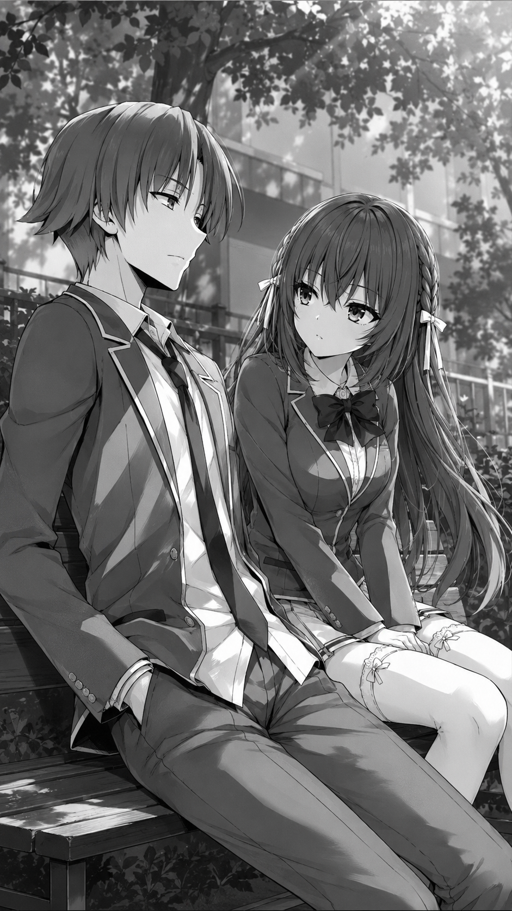
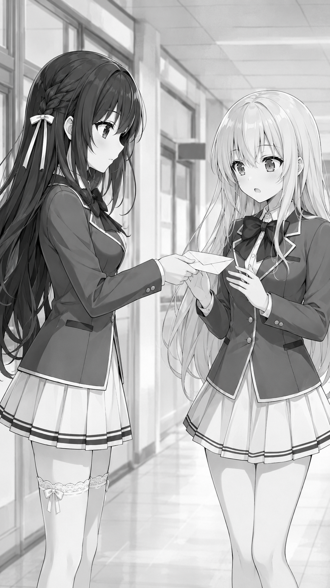

Том 1.5. Глава 1: Прощупывание почвы Весенний ветер четвертого года обучения все еще нес с собой редкие, уже увядающие лепестки сакуры, но общая атмосфера в старшей школе Кодо Икусей уже вовсю дышала скорым и неизбежным финалом. Начался наш последний, выпускной учебный год в этих изолированных от внешнего мира стенах. Для большинства обычных студентов это было время легкой ностальгии, предвкушения выпускного бала, обсуждения планов на будущее и выбора престижных университетов. Однако под этой безмятежной праздничной вывеской скрывались тектонические сдвиги в расстановке сил. После недавней напряженной встречи с Арису Сакаянаги на крыше, где мы в очередной раз обозначили свои скрытые позиции, провели жирную черту под старыми обидами и наметили глобальные цели на этот финальный сезон, обычные школьные будни казались лишь временным, обманчивым затишьем перед грядущей бурей. Каждый из лидеров параллели сейчас лихорадочно просчитывал свои шаги, готовясь к финальной схватке за заветный класс А, который гарантировал исполнение любых жизненных желаний. Смена расстановки сил заставляла нервничать даже тех, кто обычно оставался в стороне от межклассовых войн. Администрация школы вела себя подозрительно тихо, и это затишье лишь подтверждало, что первый специальный экзамен года окажется беспрецедентно суровым. Я сидел на удаленной скамейке в самой глубине школьного двора, надежно скрытый от лишних глаз густыми, аккуратно подстриженными декоративными кустами. Экран моего телефона тускло светился в полутени весенней зелени. Личные баллы и общая статистика класса 4-C, в котором я теперь числился после масштабных межклассовых перестановок прошлого года, требовали детального, математического анализа. Смена привычного окружения повлекла за собой множество новых, пока еще не изученных переменных, которые нужно было срочно упорядочить в голове, прежде чем администрация школы объявит правила испытания. Мой взгляд методично скользил по спискам имен моих новых одноклассников, когда из глубоких аналитических размышлений меня вывел тихий, но на удивление уверенный шаг по гравийной дорожке. Шаги были легкими, ритмичными, без колебаний или спешки, свойственной тем, кто кого-то тайно выслеживает. Обычный человек не обратил бы на это внимания, но я привык фиксировать любые изменения в окружающей обстановке. — Не помешаю, Аянокоджи-кун? — раздался чистый, открытый девичий голос, нарушивший мерное шуршание листвы. Я спокойно поднял глаза, предварительно заблокировав экран мобильного устройства, чтобы не раскрывать содержание своих рабочих таблиц. Передо мной стоически и с мягкой улыбкой стояла Маюми Кунихара. Её длинные, ухоженные коричневые волосы доходили почти до самой талии, слегка колыхаясь на ветру и ловя на себе редкие солнечные блики, пробивавшиеся сквозь кроны деревьев. Два аккуратных белых бантика по бокам головы стягивали пряди, делая её образ обманчиво хрупким, домашним и даже немного детским на первый взгляд. На ней была стандартная школьная форма Кодо Икусей, которая сидела на её фигуре безупречно, подчеркивая аккуратность хозяйки. В ее глубоких черных глазах, внимательно изучавших мое лицо, не было привычного для многих моих одноклассников подсознательного страха, робости, скрытого напряжения или подозрительности. Она смотрела на меня прямо, свободно и с каким-то особым, живым, исследовательским интересом, словно видела передо мной не просто человека, а сложную загадку. — Разумеется, Кунихара. Присаживайся. Нам действительно редко удается поговорить наедине, особенно после всех недавних перестановок в структуре параллели, — спокойно и ровно ответил я, слегка отодвигаясь к самому краю деревянной скамьи и освобождая для неё достаточно пространства. Маюми не входила в число самых популярных, ярких или политически влиятельных девушек в классе 4-D и в других параллельных классах. Она не вела за собой толпу, не участвовала в интригах и не пыталась занять лидерские позиции в девичьих кругах. Однако её манера общения среди сверстников всегда заметно выделялась на общем фоне, если присмотреться повнимательнее. В отличие от той же Кикё Кушиды, которая годами виртуозно носила фальшивую маску идеальной доброжелательности ради манипуляций, или Сузуне Хорикиты, которая изначально предпочитала отгораживаться от окружающих ледяной стеной гордости и независимости, вообщем, это уже в прошлом, сейчас они уже в А классе, а я лидер С класса. А Кунихара была по-настоящему доверчивой, честной и открытой. В ее действиях никогда не ощущалось двойного дна. Но главным её отличием от сотен других студентов был редкий, почти пугающий дар — она обладала удивительной, обостренной эмпатией и умела видеть людей гораздо глубже, чем они пытались казаться со стороны. Она буквально считывала истинную суть человека, полностью игнорируя внешнюю оболочку, социальный статус или репутацию. Если человек ей не нравился внешне или вел себя вызывающе, она все равно стремилась понять, что гложет его изнутри, дожидаясь, пока тот сам раскроет перед ней свои карты. Это качество делало её уникальной, но в то же время уязвимой в условиях нашей школы. Она аккуратно присела на самый край скамейки, расправив подол своей школьной юбки и бережно положив сумку на колени. На несколько длинных мгновений между нами повисло абсолютное молчание. Вокруг шелестели листья, а где-то совсем вдали слышались приглушенные голоса других студентов, спешащих после уроков в торгово-развлекательный центр или свои общежития. Я терпеливо ждал, не нарушая тишину первым. Мне было искренне любопытно, какую именно карту эта тихая, проницательная девушка решит разыграть сейчас, выследив меня в таком уединенном месте школьного парка. Она явно пришла сюда целенаправленно, и её целью был именно я. Ждать пришлось недолго. Маюми сначала посмотрела на медленно плывущие по весеннему небу облака, словно собираясь с духом и подбирая правильные слова, а затем резко, без единого колебания повернула голову ко мне. Она заглянула своими темными, бездонными глазами прямо в мое лицо, пытаясь пробиться сквозь мою вечную маску безразличия. В этом взгляде сквозило отчетливое желание прощупать почву. Ей не нужны были пустые сплетни, она хотела лично проверить свои догадки относительно моей скромной персоны.
— Ты слишком глубоко ушел в свои мысли, Аянокоджи-кун. Пожалуй, с самого начала нашего знакомства я замечала за тобой эту странную отстраненность. И мне всегда было безумно интересно узнать, какой ты на самом деле человек, когда сбрасываешь все свои защитные барьеры перед окружающими. К какому бы выводу о тебе ни приходили другие ученики нашей параллели, мне всегда казалось, что твоя истинная сущность лежит где-то гораздо глубже общепринятых слухов. — Мне искренне любопытно это узнать, — ровным, привычным тоном отозвался я, внутренне приготовившись тщательно фиксировать и анализировать каждое её последующее слово. — Все вокруг, большинство наших одноклассников, видят в тебе либо обычного серого тихоню, который случайно плывет по течению, либо просто способного парня, который когда-то выполнял сложные поручения Хорикиты-сан, — она мягко, почти сочувственно улыбнулась, но взгляд её черных глаз оставался невероятно проницательным и серьезным. — Но когда я смотрю на тебя сама, когда пытаюсь понять твои истинные мотивы в повседневных делах, я вижу совершенно другого человека. Я вижу кого-то, кто скрывает за своей нарочитой серостью невероятно холодный расчет, колоссальную внутреннюю силу и абсолютное хладнокровие. Ты упрямо прячешься за этой маской нормальности. Тебе ведь просто так гораздо удобнее собирать информацию обо всех нас, верно? Ты наблюдаешь за нами, оставаясь невидимым для большинства, но от меня эту пустоту не скрыть. Мое сердце, разумеется, не дрогнуло от её слов, и пульс остался в пределах идеальной нормы, но в своей ментальной базе данных я сделал жирную и очень важную пометку. Эта девушка действительно видела намного глубже абсолютного большинства людей в этой элитной школе. Пока остальные ученики Кодо Икусей пребывали в счастливом неведении насчет моей истинной натуры, считая меня просто удобным инструментом или загадочным одиночкой, Маюми Кунихара умудрилась подобраться к правде ближе многих профессиональных стратегов нашей параллели. Она не опиралась на слухи, не анализировала сухие отчеты и не судила по внешности. Ей хотелось докопаться до самой сути, разобрать меня как сложный, неизведанный и опасный механизм, чтобы понять, как устроены шестеренки моей души. Она упрямо прощупывала почву, пытаясь заставить меня выдать хоть какую-то эмоцию. Однако я продолжал сохранять абсолютно нейтральное выражение лица, не позволяя ни единому мускулу выдать мои мысли. Подобная проницательность в стенах Кодо Икусей могла стать как мощным оружием, так и смертным приговором для её обладателя. Пока остальные ученики школы пребывали в счастливом неведении насчет моей истинной натуры, эта девушка умудрилась подобраться к правде ближе многих. Для нее я не был просто безликим одноклассником. Она видела во мне аномалию, загадку, которую ей отчаянно хотелось разгадать. Но делиться ответами я не планировал, так как любой лишний шаг мог разрушить мою выверенную стратегию.— Возможно, в твоих аналитических выводах есть доля правды, Кунихара, — уклонился я от прямого ответа, переводя взгляд на пустую аллею, где ветер кружил сухие листья. — Каждому из нас приходится адаптироваться, чтобы выжить в жестких условиях этой школы. Но если это всё, что ты хотела узнать, то мне пора возвращаться к подготовке к занятиям. Увидимся в классе. Маюми внимательно посмотрела на меня, пытаясь уловить хоть малейшее изменение в моем голосе или позе. Но натолкнувшись на мою абсолютную, леденящую непроницаемость, она тихо вздохнула. В её черных глазах промелькнуло мимолетное разочарование, смешанное с глубоким уважением. Она поняла, что я выстроил между нами стену, которую невозможно разрушить простым разговором. Мой секрет по-прежнему оставался в безопасности от большинства учеников школы, но эта девушка определенно стала новой, опасной переменной в моих планах. Маюми Кунихара, которая превыше всего в людях ценила искренность и открытость, только что на полной скорости столкнулась с абсолютной, леденящей пустотой, которую она так самонадеянно пыталась разгадать. — Ты действительно искусно умеешь защищать свои секреты, Аянокоджи-кун, — произнесла она, плавно поднимаясь со скамьи и поправляя лямку сумки. — Но я не привыкла сдаваться так просто после первой же неудачи. Мне нужно время, чтобы лучше во всем разобраться, и я найду способ узнать, что ты скрываешь. Она развернулась и быстрыми, решительными шагами направилась в сторону главного корпуса. Я смотрел ей вслед, понимая, что её стремление узнать обо мне больше может нарушить хрупкий баланс сил в классе 4-D. Однако её характер подсказывал, что она не станет действовать грубо или устраивать открытую слежку. Вместо этого её аналитический ум уже просчитывал совершенно иной, гораздо более тонкий план. Оставшись один на скамейке, я снова зажег экран телефона. Рокировка фигур на доске Кодо Икусей началась, и Маюми только что сделала свой первый, пока еще робкий ход в этой затяжной партии выпускного года. Спустя полчаса Маюми уже стояла в тихом, залитом мягким дневным светом школьном коридоре около кабинета студенческого совета, терпеливо дожидаясь Хонами Ичиносэ. Шаги редких учеников затихали вдали, и эта уединенность играла девушке на руку. Для Кунихары Хонами всегда была не просто лидером ее прошлого класса, а настоящим идеалом человеческой искренности и доброты — тем самым ярким солнцем, на которое хотелось равняться в самые трудные минуты. В этом учебном заведении, полном лжи, скрытых ловушек и коварства, Ичиносэ оставалась едва ли не единственным человеком, которому Маюми могла безоговорочно доверить свои сокровенные мысли, не опасаясь предательства или удара в спину. В руках Кунихара бережно, почти трепетно держала плотно запечатанный белый бумажный конверт. Внутри него скрывалось короткое письменное послание, способное завязать совершенно новый, непредсказуемый узел интриг на этом курсе. Когда тяжелые двери кабинета наконец с тихим скрипом распахнулись и Хонами вышла в коридор, Маюми сделала глубокий вдох, собираясь с остатками сил, и решительно шагнула ей навстречу. На ее бледных щеках все еще играл легкий румянец от пережитого на скамейке волнения, а пальцы слегка подрагивали, но взгляд черных глаз выражал абсолютную сосредоточенность. Она понимала, что отступать уже поздно. — Ичиносэ-сан, прости, что отвлекаю тебя после тяжелой работы в совете, — тихо, но удивительно отчетливо произнесла Маюми, протягивая конверт лидеру своего прошлого класса. — Пожалуйста, передай это лично в руки Аянокоджи-куну, когда будешь встречаться с ним наедине. Это очень важно, и у меня есть к тебе огромная, эгоистичная просьба: пожалуйста, не открывай его. Я доверяю только тебе в этой школе, Хонами-сан.Хонами Ичиносэ резко замерла, удивленно моргнув длинными ресницами. На её обычно приветливом, теплом и открытом лице промелькнула тень искренней растерянности, смешанной с внезапным внутренним беспокойством. Студенческий коридор в этот предвечерний час был практически пуст, и протянутый белый конверт казался невероятно весомым и чужеродным в этой звенящей тишине. Хонами перевела взгляд с загадочного бумажного квадрата на серьезное, напряженное лицо своей бывшей одноклассницы, пытаясь интуитивно считать её настоящие эмоции. Ичиносэ прекрасно знала, что любые скрытые послания, так или иначе связанные с именем Аянокоджи Киётаки, никогда не бывают простыми. Вокруг этого парня всегда вращались мрачные тайны, скрытые мотивы и опасные многоходовки, которые могли в любой момент ударить по всей параллели. — Кунихара-сан?.. — мягко, с легкой хрипотой в голосе отозвалась Хонами, осторожно протягивая руку и принимая запечатанный конверт из пальцев Маюми. — Письмо для Аянокоджи-куна? Да еще и строго наедине... Прости, я совершенно не хочу лезть не в свое дело, но между вами что-то произошло? Ты кажешься очень взволнованной, и на тебе буквально нет лица. — Пожалуйста, не спрашивай меня ни о чем, Хонами-сан, — Маюми грустно, но твердо покачала головой, а два её белых бантика на волосах качнулись в такт этому движению. — Я просто пытаюсь самостоятельно во всем разобраться. Этот парень... он совсем не тот, кем кажется на первый взгляд. В нем скрыто нечто пугающее. Но я верю, что ты сможешь передать это без лишних свидетелей и глупых слухов. Спасибо тебе. Не дожидаясь дальнейших расспросов со стороны ошеломленной собеседницы, Кунихара вежливо поклонилась и быстро пошла прочь по коридору, стремясь поскорее скрыться за поворотом, пока эмоции окончательно не взяли верх над её хрупким самообладанием. Ей нужно было остаться одной, чтобы переварить всё то, что она сегодня узнала. Хонами осталась стоять посреди пустого пролета в полном одиночестве. Она медленно опустила взгляд на гладкую, плотную бумагу конверта, бережно сжимая его тонкими пальцами. В её голове в этот момент роились десятки тревожных и путаных мыслей. Ичиносэ и сама давно замечала, что Аянокоджи ведет какую-то свою, ведомую только ему одному глобальную игру, скрывая истинные способности. Теперь новая переменная в лице проницательной Маюми Кунихары, которая славилась умением видеть людей насквозь, лишь подтверждала её самые худшие опасения. Что именно скрывалось внутри этого таинственного письма? Было ли это предупреждением, вызовом или результатом того, что Маюми смогла разглядеть сквозь вечную маску серого тихони? Хонами глубоко вздохнула, аккуратно убирая запечатанный конверт в потайной карман своей школьной сумки. Она отчетливо понимала, что обязана выполнить эту просьбу ради доверия подруги, даже если грядущая встреча с Аянокоджи заставит её собственное сердце биться в разы быстрее от накатывающего предчувствия неизбежной опасности как в прошлый раз. Расстановка сил в классе 4-D снова пришла в активное движение, и это тайное послание запускало сложную цепочку событий, последствия которых мне, Киётаке, только предстояло детально просчитать наперед в этой затяжной и жестокой партии выпускного года.